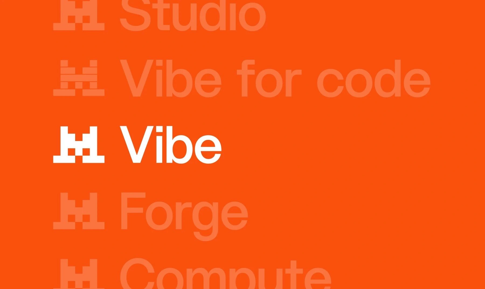

Les services de Mistral AI
Mistral AI développe des solutions d’intelligence artificielle destinées aussi bien au grand public qu’aux entreprises. Ses services permettent notamment de créer du contenu, d’analyser des informations, de programmer et d’intégrer des modèles d’IA dans différentes applications.
Mistral Le Chat
Un assistant pour les tâches du quotidien
Le Chat est l’assistant conversationnel de Mistral AI. Il permet notamment de poser des questions, rédiger et résumer des textes, rechercher des informations et obtenir de l’aide pour différentes tâches.
Intégrer l’IA dans des applications
Mistral AI propose des outils permettant aux développeurs d’utiliser ses modèles d’intelligence artificielle dans leurs propres applications. Le Studio permet notamment de travailler avec les modèles et de créer des solutions adaptées à différents besoins.
L’analyse de documents

Comprendre et exploiter des documents
Les solutions de Mistral AI peuvent être utilisées pour analyser des documents et en extraire les informations importantes. Elles peuvent notamment faciliter la recherche d’informations dans de grandes quantités de contenu.
Le traitement du texte et du code
Créer, analyser et programmer
Les modèles de Mistral AI peuvent traiter différents types de contenus, notamment du texte et du code. Ils peuvent ainsi aider à générer du contenu, analyser des informations ou accompagner les développeurs dans leurs projets informatiques.
Du particulier à l’entreprise
Les services de Mistral AI sont conçus pour répondre à différents usages. Ils peuvent être utilisés par des particuliers, des étudiants, des développeurs ou encore des entreprises qui souhaitent intégrer l’intelligence artificielle dans leurs activités.